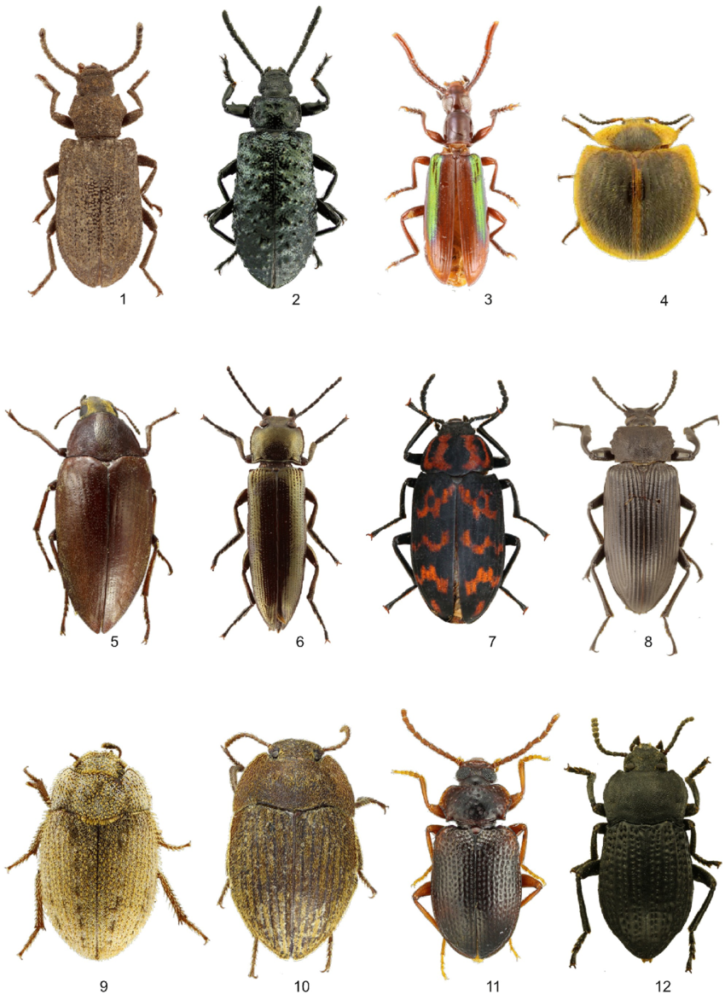
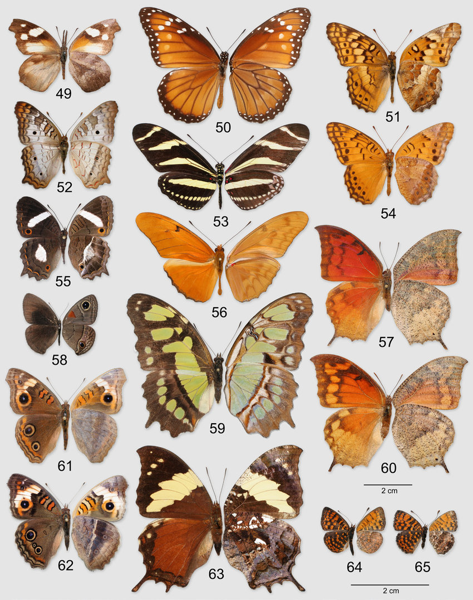
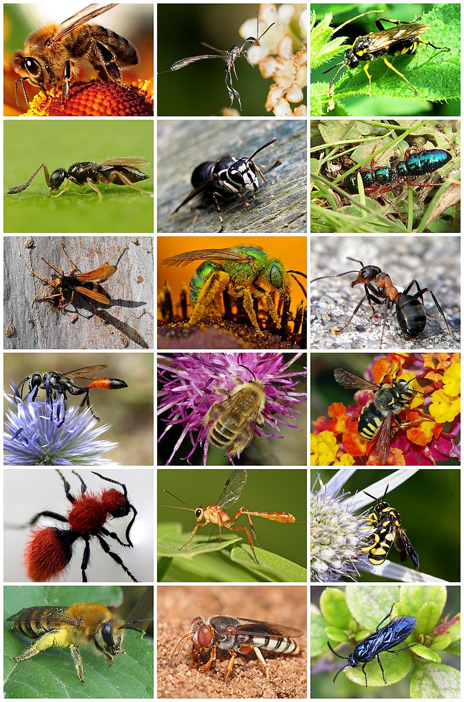
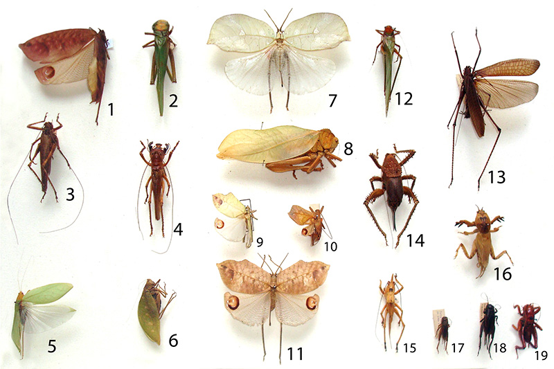

Filo Hexapoda (Insetos)
Bem-vindo ao mundo dos Insetos!
Prepare-se para explorar o incrível universo dos insetos, os verdadeiros mestres da adaptação! Com seus corpos segmentados, asas e antenas, eles dominam os ambientes terrestres e aquáticos, desempenhando papéis essenciais nos ecossistemas.
Você sabia que os insetos são os maiores polinizadores do planeta? Sem eles, muitas plantas não poderiam se reproduzir, e a vida como conhecemos seria drasticamente diferente.
Descubra como vivem formigas, borboletas, besouros e outros insetos fascinantes. Aprenda sobre sua morfologia, ecologia e importância para o equilíbrio ambiental. E não se esqueça de testar seus conhecimentos no nosso Miniquiz ao final. Vamos lá, aventureiro dos artrópodes!
As imagens podem ser ampliadas para melhorar a visualização, e os QR Codes fornecem acesso a estruturas 3D representativas de cada grupo.
Grupos do Subfilo Hexapoda
Coleoptera (Besouros)
Características: Asas anteriores endurecidas (élitros) que protegem as asas posteriores membranosas.
Lepidoptera (Borboletas e Mariposas)
Características: Asas cobertas por escamas coloridas; aparelho bucal em forma de espiral (probóscide).
Hymenoptera (Abelhas, Vespas e Formigas)
Características: Corpo dividido em cabeça, tórax e abdômen; muitas espécies vivem em colônias organizadas.
Orthoptera (Gafanhotos e Grilos)
Características: Pernas traseiras adaptadas para saltar; produzem sons ao esfregar partes do corpo.
Morfologia
- Corpo:
Dividido em três partes principais:
- Cabeça: Contém os olhos compostos, antenas e peças bucais especializadas (como mastigadoras, sugadoras ou perfuradoras, dependendo da espécie).
- Tórax: Segmento central que suporta as asas e as pernas. É dividido em três partes: protórax, mesotórax e metatórax.
- Abdômen: Contém os órgãos digestivos, excretores e reprodutivos. Geralmente é segmentado e flexível.
- Pernas:
Três pares de pernas articuladas, localizadas no tórax. Cada par pode ser adaptado para diferentes funções:
- Caminhar: Pernas simples para locomoção.
- Saltar: Pernas traseiras alongadas, como em gafanhotos.
- Cavar: Pernas robustas e adaptadas, como em grilos-toupeira.
- Nadar: Pernas achatadas e adaptadas para ambientes aquáticos, como em besouros aquáticos.
- Antenas: Um par de antenas sensoriais localizadas na cabeça. São usadas para detectar cheiros, vibrações, umidade e até mesmo para comunicação em algumas espécies.
- Asas:
Geralmente dois pares de asas, embora algumas espécies sejam ápteras (sem asas). As asas podem ser:
- Membranosas: Como em libélulas e abelhas.
- Endurecidas: Como os élitros dos besouros, que protegem as asas posteriores.
- Escamosas: Como nas borboletas, que possuem asas cobertas por escamas coloridas.
- Olhos: Os insetos possuem olhos compostos, formados por várias unidades chamadas omatídeos, que permitem uma visão ampla e sensível ao movimento. Além disso, muitos possuem olhos simples (ocelos) para detectar luz e escuridão.
- Peças bucais:
Altamente diversificadas, adaptadas ao tipo de alimentação:
- Mastigadoras: Como em gafanhotos e besouros.
- Sugadoras: Como em borboletas e mariposas.
- Perfuradoras: Como em mosquitos.
- Lambe-lambe: Como em moscas.

Ecologia
- Habitats:
- Terrestres: A maioria dos insetos vive em ambientes terrestres, como florestas, campos, desertos e até mesmo em áreas urbanas.
- Aquáticos: Algumas espécies, como as larvas de libélulas e besouros aquáticos, vivem em ambientes aquáticos, desempenhando papéis importantes na cadeia alimentar.
- Subterrâneos: Insetos como formigas e cupins constroem túneis e colônias subterrâneas, ajudando a arejar o solo e reciclar nutrientes.
- Funções ecológicas:
- Polinizadores: Insetos como abelhas, borboletas e besouros são essenciais para a polinização de plantas, garantindo a reprodução de muitas espécies vegetais e a produção de alimentos.
- Decompositores: Besouros, moscas e outros insetos ajudam a decompor matéria orgânica, como folhas, madeira morta e carcaças de animais, reciclando nutrientes para o ecossistema.
- Controle de pragas: Insetos predadores, como joaninhas e louva-a-deus, ajudam a controlar populações de pragas agrícolas, reduzindo a necessidade de pesticidas.
- Dispersores de sementes: Algumas espécies de formigas carregam sementes para seus ninhos, ajudando na dispersão e germinação de plantas.
- Interações ecológicas:
- Simbiônticos: Muitos insetos vivem em simbiose com outras espécies. Por exemplo, formigas protegem pulgões em troca de secreções açucaradas.
- Predadores e presas: Insetos desempenham papéis duplos na cadeia alimentar, sendo predadores de pequenos organismos e presas de aves, anfíbios e mamíferos.
- Parasitismo: Algumas espécies, como vespas parasitóides, depositam seus ovos em outros insetos, cujas larvas servem de alimento para os filhotes.
- Impacto nos ecossistemas:
- Manutenção do equilíbrio ecológico: Insetos desempenham papéis cruciais na manutenção do equilíbrio dos ecossistemas, garantindo a reciclagem de nutrientes e a saúde do solo.
- Bioindicadores: A presença ou ausência de certas espécies de insetos pode indicar a saúde de um ecossistema, como a qualidade da água ou do solo.
- Engenheiros do ecossistema: Insetos como cupins e formigas constroem estruturas que modificam o ambiente, criando habitats para outras espécies.
Resumo
| Grupo | Características | Exemplos | Habitat |
|---|---|---|---|
| Coleoptera | Asas anteriores endurecidas (élitros) que protegem as asas posteriores membranosas | Besouros, joaninhas | Terrestre |
| Lepidoptera | Asas cobertas por escamas coloridas; aparelho bucal em forma de espiral (probóscide) | Borboletas, mariposas | Terrestre |
| Hymenoptera | Corpo dividido em cabeça, tórax e abdômen; muitas espécies vivem em colônias organizadas | Abelhas, vespas, formigas | Terrestre |
| Orthoptera | Pernas traseiras adaptadas para saltar; produzem sons ao esfregar partes do corpo | Gafanhotos, grilos | Terrestre |
Miniquiz
Qual inseto realiza metamorfose completa?
Qual grupo possui asas cobertas por escamas coloridas?
Qual grupo é conhecido por viver em colônias organizadas?
Qual inseto é conhecido por produzir mel?
Qual grupo possui pernas traseiras adaptadas para saltar?
Qual inseto é conhecido por sua capacidade de carregar objetos muito maiores que seu próprio peso?